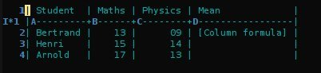

Utiliser Org comme tableur: une courte introduction
Table des matières
{Retour à l’index de Worg} – {This tutorial in english}
Introduction
Ce court tutorial expose les connaissances de base à acquérir pour utiliser Org comme tableur.
Démarrons avec un tableau très simple :
| Étudiant | Maths | Physique |
|---|---|---|
| Bertrand | 13 | 09 |
| Henri | 15 | 14 |
| Arnold | 17 | 13 |
Au format Org, ce tableau s’écrit ainsi :
| Student | Maths | Physics | |----------+-------+---------| | Bertrand | 13 | 09 | | Henri | 15 | 14 | | Arnold | 17 | 13 |
Le but de ce tutoriel est de comprendre comment aller de ce simple tableau à celui-ci, où nous calculons les moyennes par étudiant et par discipline:
| Étudiant | Maths | Physique | Moyenne |
|---|---|---|---|
| Bertrand | 13 | 09 | 11 |
| Henri | 15 | 14 | 14.5 |
| Arnold | 17 | 13 | 15 |
| Moyennes | 15 | 12 | 13.5 |
Se familiariser avec les références
Commençons par la moyenne de chaque étudiants.
| Étudiant | Maths | Physique | Moyenne | |----------+-------+----------+-----------| | Bertrand | 13 | 09 | [Formule] | | Henri | 15 | 14 | | | Arnold | 17 | 13 | |
Avant de pouvoir insérer une formule dans [Formule], vous devez savoir
comment vous référer à une rangée, une colonne ou à une cellule.
La manière la plus simple d’apprendre la façon dont fonctionne les
références est de taper C-c ? quand vous êtes dans une cellule.
Par exemple, si vous êtes dans la cellule contenant [Formule], C-c ?
vous indiquera line @2, col $4, ref @2$4 or D2, ce qui signifie que vous
êtes dans la seconde rangée (ou ligne) de la quatrième colonne, et la
référence à cette cellule est soit @2$4 soit D2.
À tout moment, si vous êtes perdu dans les rangées et les colonnes, vous
pouvez toujours activer une grille de visualisation des références avec le
raccourci C-c }:

Votre première formule
Placez le curseur dans le champ (vide) [Formule]. Maintenant tapez
:=vmean($2..$3) dans ce champ. Cette formule signifie: calculer la
moyenne (mean en anglais) pour les champs compris entre la deuxième
cellule ($2) et la troisième cellule ($3) dans cette rangée. Si vous
préférez utiliser une autre notation, tapez :=vmean(B&..C&) – dans ce
cas, le caractère & signifie « dans cette rangée », ce qui est implicite
dans la notation précédente.
Toujours dans cette rangée, tapez C-c C-c - vous devriez observer deux
choses : 1) la formule est remplacée par le résultat du calcul et 2) une
nouvelle ligne commençant par #+TBLFM est insérée en bas du tableau.
La ligne #+TBLFM contient toutes les formules pour la table située
au-dessus – faites attention avant d’éditer cette ligne manuellement.
Formules pour les colonnes et pour les champs
Donc, nous avons désormais ce tableau :
| Étudiant | Maths | Physique | Moyenne | |----------+-------+----------+---------| | Bertrand | 13 | 09 | 11 | | Henri | 15 | 14 | | | Arnold | 17 | 13 | | #+TBLFM: @2$4=vmean($2..$3)
Mais ce que nous voulons vraiment, c’est calculer les formules pour tous
les champs de la colonne « Moyenne ». En d’autres termes, nous voulons en
fait une formule de colonne (column formula), pas seulement
une formule de champ (field formula.)
Pour remplacer la formule avec une formule de colonne, retournez dans le
champ où cette formule a été définie et tapez =vmean($2..$3). Notez que
la seule différence avec ce que nous avons inséré plus haut est que cette
formule est préfixée par = au lieu de :=. Quand c’est fait, faites un
C-c C-c dans le champ : on vous demandera si vous voulez remplacer la
formule avec une formule de colonne, ce qui est précisément ce que nous
voulons.
Une fois que vous répondez « yes », la valeur dans le champ devrait être la
même qu’auparavant (à savoir 11) et vous pouvez désormais mettre à jour
tous les champs de cette colonne en réappliquant toutes les formules avec
C-u C-c * (ou C-c C-c si vous êtes sur la ligne #+TBLFM.)
Donc nous avons maintenant ce tableau :
| étudiant | Maths | Physique | Moyenne | |----------+-------+----------+---------| | Bertrand | 13 | 09 | 11 | | Henri | 15 | 14 | 14.5 | | Arnold | 17 | 13 | 15 | #+TBLFM: $4=vmean($2..$3)
Comme l’unique formule de la ligne #+TBLFM s’applique désormais à toute
la colonne, elle ne contient aucune référence à une rangée. Avant, la
formule était appliquée au champ @2$4, elle est maintenant appliquée
pour toute la quatrième colonne.
Pour finir, nous pouvons ajouter la rangée pour les moyennes par discipline. Cette rangée contient deux formules de cellue, chacune calculant la moyenne pour le champ situé au-dessus dans la même colonne :
| Étudiant | Maths | Physique | Moyenne | |----------+-------+----------+---------| | Bertrand | 13 | 09 | 11 | | Henri | 15 | 14 | 14.5 | | Arnold | 17 | 13 | 15 | |----------+-------+----------+---------| | Moyennes | 15 | 12 | | #+TBLFM: $4=vmean($2..$3)::@5$2=vmean(@2$2..@4$2)::@5$3=vmean(@2$3..@4$3)
Ce qui produit ce tableau :
| Étudiant | Maths | Physique | Moyenne |
|---|---|---|---|
| Bertrand | 13 | 09 | 11 |
| Henri | 15 | 14 | 14.5 |
| Arnold | 17 | 13 | 15 |
| Moyennes | 15 | 12 |
Éditer des formules de manière interactive
Pour l’instant nous avons défini les formules en les insérant directement
dans les cellules du tableau : taper = dans une cellule lance la
définition pour formule de colonne, et taper := lance la définition pour
une formule de cellule.
Si vous préférez, vous pouvez éditer les formules dans le minibuffer:
utilisez C-c = pour éditer les formules de colonne et C-u C-c = pour
éditer les formules de cellule.
Mais vous pouvez aussi éditer les formules de manière plus interactive dans un buffer dédié en tapant C-c ’. Le nouveau buffer liste toutes les formules du tableau et facilite l’édition des références.
Quand le curseur est sur une référence, les champs correspondant du tableau
sont surlignés. Sympa! Mais vous pouvez faire encore plus : vous pouvez
en fait choisir la référence en utilisant les touches
S-<left/right/up/down> (shift + les touches du curseur).

Note : vous pouvez avoir peur que de déplacer une colonne avec
M-<left/right> ou bien une rangée du tableau avec M-<up/down> perturbe
les références de la ligne #+TBLFM, mais chaque movement met à jour
automagiquement les références de la ligne #+TBLFM.
Calc et les formules Elisp
La syntaxe par défaut pour les formules est celle de Calc, la librairie de GNU Emacs pour faire des calculs.
Voici un extrait du manuel de Calc au sujet des formules algébriques :
Les formules algébriques utilise les opérateurs `+', `-', `*', `/', and `^'. Vous pouvez utiliser les parenthèses pour clarifier l'ordre d'évaluation. En l'absence de parenthèses, `^' est évalué en premier, puis `*', puis `/', et enfin `+' et `-'. Par exemple, l'expression 2 + 3*4*5 / 6*7^8 - 9 est equivalente à 2 + ((3*4*5) / (6*(7^8)) - 9
Dans les tableau org, vous pouvez utiliser des références à la place des valeurs pour faire des calculs. Simple comme bonjour.
Mais quid de l’utilisation de formules en Emacs lisp au lieu de Calc ?
Disons par exemple que vous voulez associer à chaque étudiant une décimal du nombre Pi, en fonction de la moyenne de leurs notes en maths et en physiques.
Pour cela vous aurez besoin de dire à Org quelle est la valeur que vous prendrez comme valeur de Pi. Vous pouvez le faire en ajoutant cette ligne.
#+CONSTANTS: pi=3.14159265358979323846
(N’oubliez pas de taper C-c C-c sur la ligne #+CONSTANTS de façon à ce
qu’Org soit la prenne en compte.)
Ensuite vous pouvez définir une formule Emacs lisp telle que celle-ci :
$5='(substring (number-to-string $pi) (round $4) (1+ (round $4)));N
Hum. Voyons ce que ça veut dire.
(substring S A B): prendre une sous-chaîne de caractères entre les positionsAetBde la chaîneS.(number-to-string $pi): convertir la constante « Pi » en chaîne de caractères.(round $4): prendre la valeur arrondie de la valeur de la colonne$4.;N: considérer que les valeurs dans les champs sont des nombres et non des chaînes de caractères.
Si la moyenne d’un étudiant est de 10, cette formule renvoie la 10ème décimale de Pi.
Déboguer les formules
Donc votre tableau ressemble désormais à ceci :
| Étudiant | Maths | Physique | Moyenne | Pi | |----------+-------+---------+------+-----------| | Bertrand | 13 | 09 | 11 | 5 | | Henri | 15 | 14 | 14.5 | 7 | | Arnold | 17 | 13 | 15 | 9 | #+TBLFM: $4=vmean($2..$3)::$5='(substring (number-to-string $pi) (round $4) (1+ (round $4)));N
Si vous revenez à ce tableau mais que vous avez la flemme de comprendre ce que fait la function en Emacs lisp, vous pouvez aussi bien déboguer la formule et suivre les étapes du calcul une par une.
Activez le débogueur de formules avec C-c { et tapez C-c C-c dans un
champ (ou C-u C-c * n’importe où dans cette table.) Ceci lancera le
calcul de la formule étape par étape, et affichera des détails sur les
différentes étapes de toutes les formules dans un buffer distinct.
Voici ce à quoi ressemble un tel buffer :
Substitution history of formula Orig: '(substring (number-to-string $pi) (round $4) (1+ (round $4)));N $xyz-> '(substring (number-to-string 3.14159265358979323846) (round $4) (1+ (round $4))) @r$c-> '(substring (number-to-string 3.14159265358979323846) (round $4) (1+ (round $4))) $1-> '(substring (number-to-string 3.14159265358979323846) (round 11) (1+ (round 11))) Result: 5 Format: NONE Final: 5
Une fois que vous avez fini de vérifier les formules, vous pouvez
désactiver le débogueur en tapant de nouveau C-c {.
Et beaucoup, beaucoup plus…
Utiliser Org comme système pour des calculs sur des tableau est vraiment très pratique.
Mais vous pouvez faire bien plus que tout ce qui a été présenté ! Utiliser des références relatives, définir des noms pour les colonnes et des paramètres pour les formules, définir des champs qui doivent être automatiquement recalculés, etc. Pour plus de détails sur l’utilisation d’Emacs lisp dans les formules, reportez vous à ce tutoriel (en anglais).
Allez voir du côté des fonctionnalités avancées dans le manuel d’Org-mode, cela vous donnera un rapide aperçu…